Promotor y app móvil
Consultar la ruta, iniciar y cerrar visitas y cumplimentar Formularios Avanzados desde la app.
Las pantallas proceden del Google Site de Aracne Shopper y de vídeos oficiales de demostración para la app móvil. Contienen datos ficticios y se publican sin anonimización, conforme a la autorización recibida. La disposición puede variar según la versión de la aplicación y el dispositivo.
Usuario Promotor activo, campaña asignada, permisos de ubicación y PDV disponibles.
Dónde estáAplicación móvil Aracne Shopper
1. Descarga y acceso
- Descarga la aplicación desde la tienda de tu dispositivo.
Paso 1. Descarga de Aracne Shopper en la tienda del dispositivo. - Abre la app y accede con tu usuario y clave.
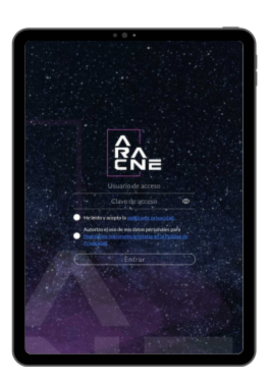
Paso 2. Pantalla de acceso a la aplicación. - Selecciona la campaña asignada.
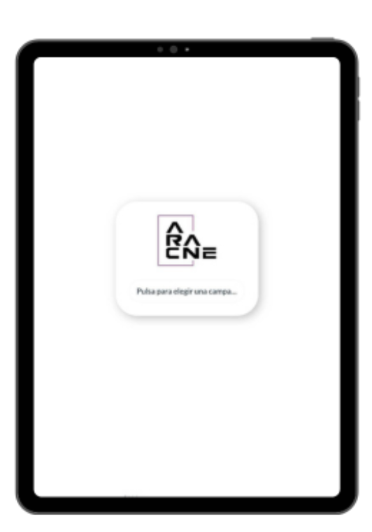
Paso 3. Selección de campaña.
2. Ruta y comienzo de la visita
- Abre el listado o calendario de rutas y elige el PDV previsto.
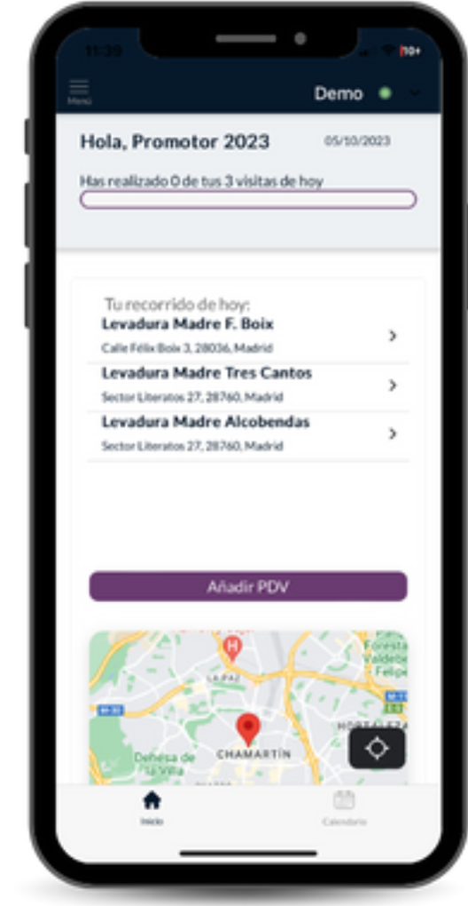
Paso 1. Listado y calendario de rutas. - Comprueba el detalle del PDV. En el establecimiento, pulsa Iniciar visita.
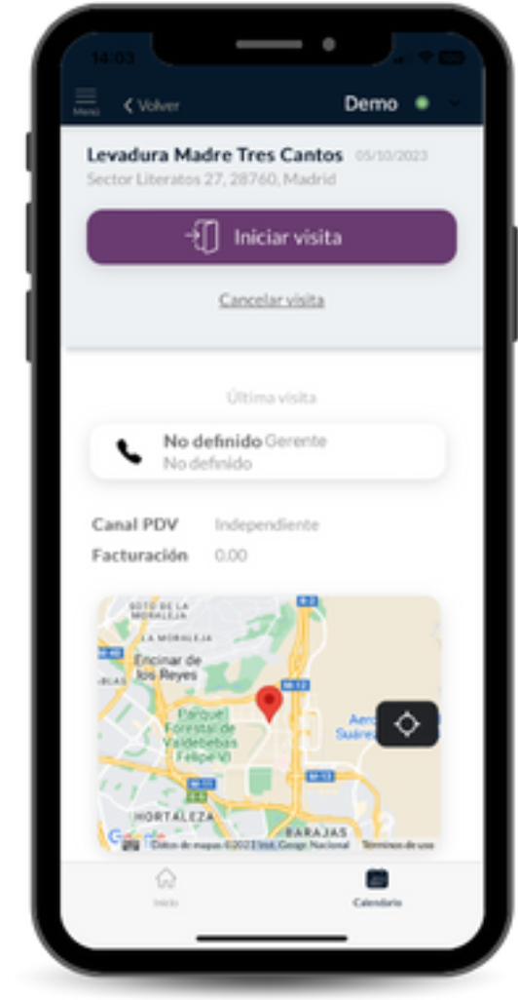
Paso 2. Detalle del PDV e inicio de visita. - Tras el check-in se activan Tareas, Info PDV, descanso y Check-out.
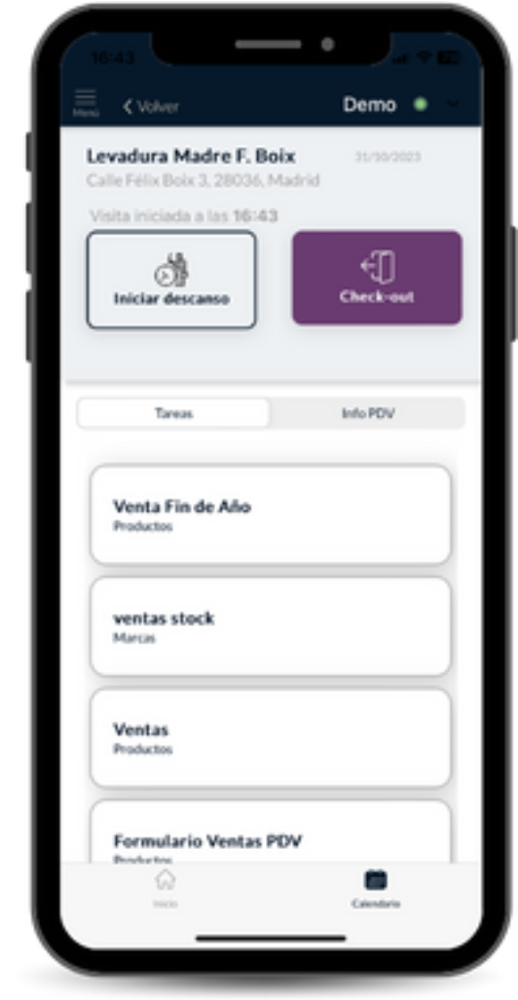
Paso 3. Opciones disponibles después del check-in.
3. Registro de trayectos
Permite registrar desplazamientos realizados fuera del horario para que queden reflejados en el informe. Es un módulo propio del menú lateral: no debe confundirse con Rutas ni con el recorrido de visitas del día.
Tener habilitado Aplicación móvil - Registro Trayectos para el cargo y disponer de conexión para buscar direcciones y calcular el recorrido.
Dónde estáMenú lateral › Registro de trayectos
Crear un trayecto
- Abre Menú y pulsa Registro de trayectos.
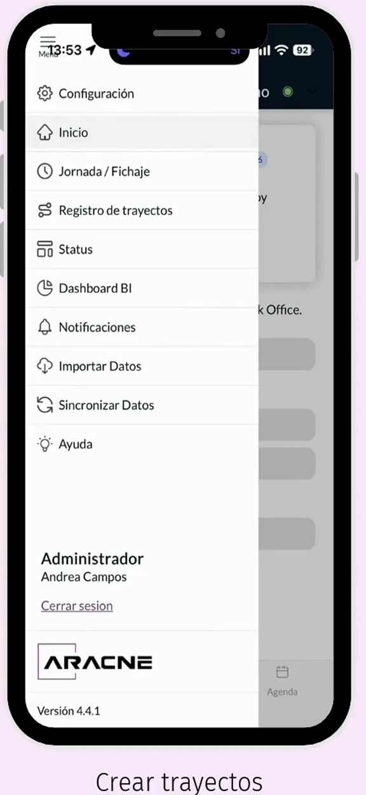
Paso 1. Registro de trayectos en el menú lateral, separado de Jornada / Fichaje. - Revisa Mis trayectos del mes. La cabecera muestra el número registrado y los kilómetros totales. Pulsa + Añadir.
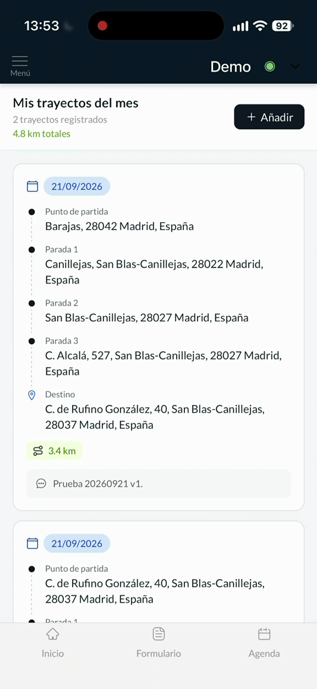
Paso 2. Listado mensual con trayectos, kilómetros y botón Añadir. - Selecciona la Fecha Trayecto en el calendario.
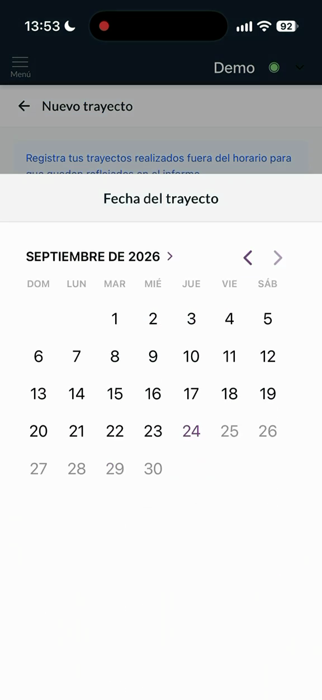
Paso 3. Selección de la fecha del trayecto. - En Trayecto, escribe y selecciona el punto de partida y el destino. Usa Añadir destino para incorporar paradas intermedias; arrastra el control lateral para reordenarlas y usa × para retirar una dirección.
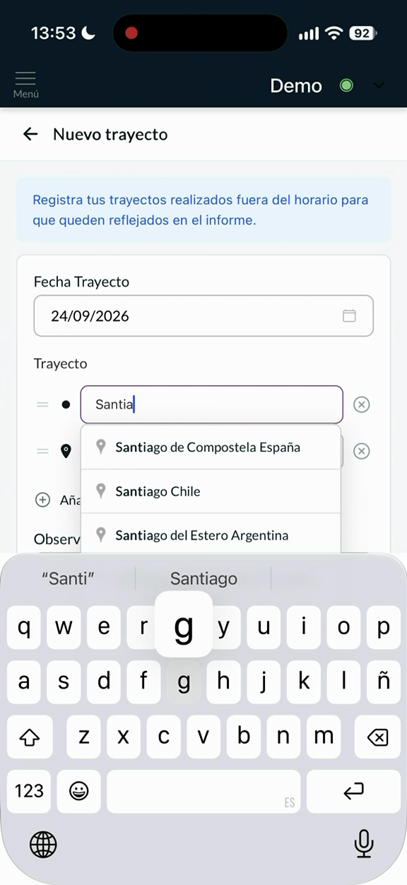
Paso 4. Fecha, direcciones del trayecto y control Añadir destino. - Comprueba la secuencia numerada sobre el mapa, completa Observaciones y pulsa Guardar trayecto.
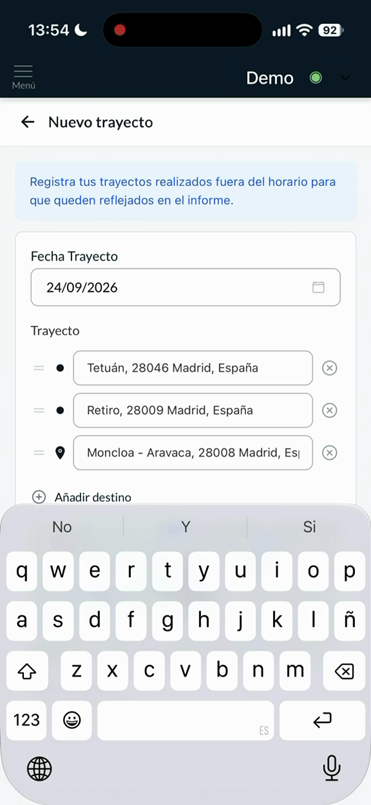
Paso 5. Mapa del recorrido, observaciones y botones Guardar trayecto y Cancelar. - Cuando aparezca Trayecto registrado correctamente, pulsa Aceptar.
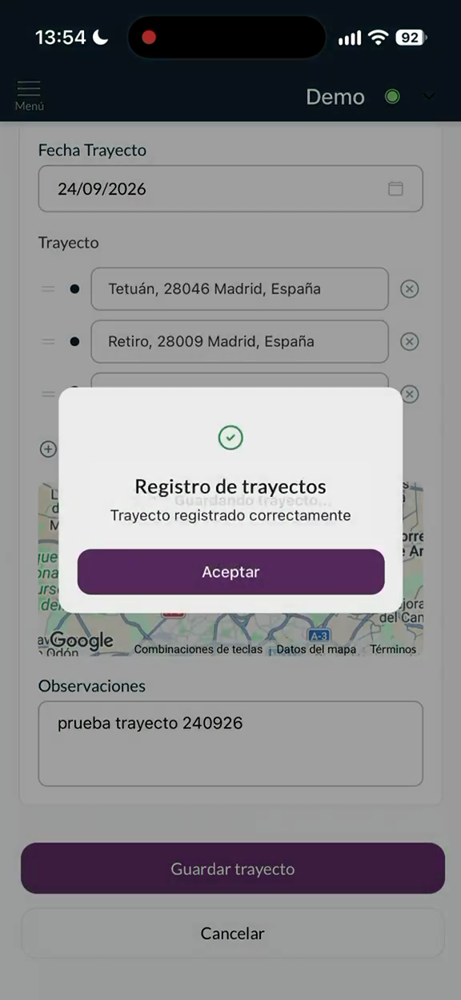
Paso 6. Confirmación del registro. - Comprueba la tarjeta creada: fecha, punto de partida, paradas, destino, distancia y observaciones.
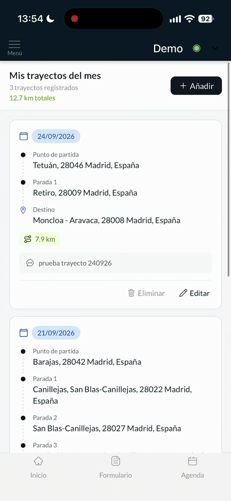
Paso 7. Trayecto creado y disponible para editar.
Editar un trayecto
- En la tarjeta correspondiente, pulsa Editar.
Paso 1. Acción Editar en la tarjeta del trayecto. - Modifica las direcciones, su orden o las observaciones. En el ejemplo se añade un nuevo destino mediante las sugerencias de dirección.
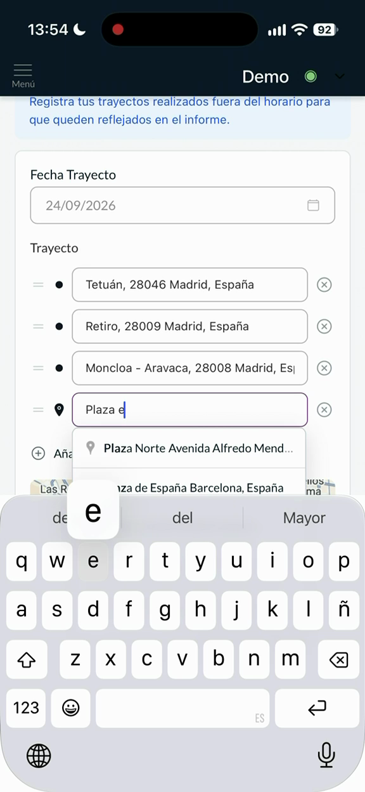
Paso 2. Edición del recorrido y selección de una dirección sugerida. - Guarda y comprueba que la tarjeta refleje el nuevo destino y la distancia recalculada.
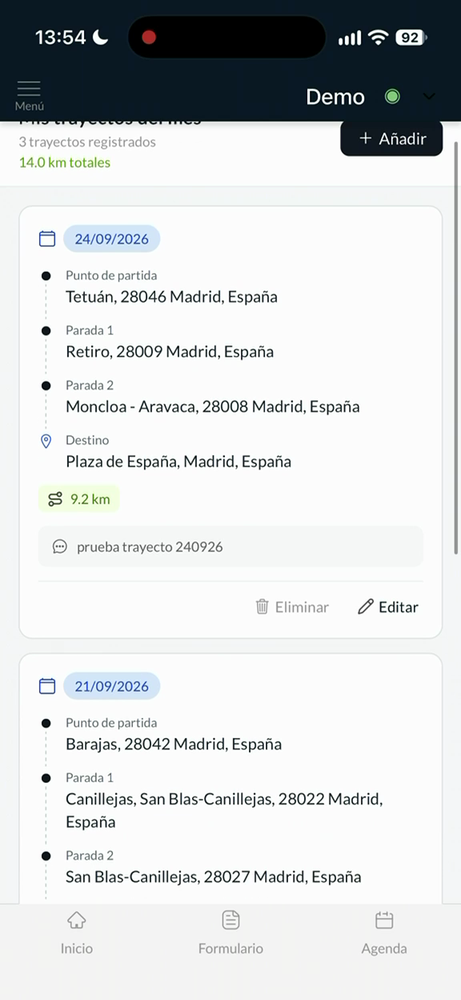
Paso 3. Trayecto actualizado con nuevo destino y kilómetros recalculados.
Opciones de cada trayecto
- Editar: abre el registro para modificar fecha, recorrido u observaciones.
- Eliminar: aparece en la tarjeta para retirar un trayecto. Úsalo únicamente cuando el registro sea incorrecto y la acción esté habilitada.
Problemas habituales
- Si el módulo no aparece, el administrador debe revisar Panel de Control › Gestión de roles › App › Aplicación móvil - Registro Trayectos.
- Si una dirección no aparece en las sugerencias, comprueba la conexión y escribe una dirección más completa.
- Antes de guardar, revisa en el mapa el orden de las paradas y el destino final.
4. Fichajes desde la app
Jornada / Fichaje permite registrar el inicio de la jornada, los descansos y la salida. Es un módulo propio del menú lateral y no debe confundirse con Gestión de Fichajes del Back Office.
Tener habilitado Aplicación móvil - Jornada / Fichaje para el cargo y disponer de una jornada asignada.
Dónde estáMenú lateral › Jornada / Fichaje
Registrar la jornada completa
- Abre Menú y pulsa Jornada / Fichaje.
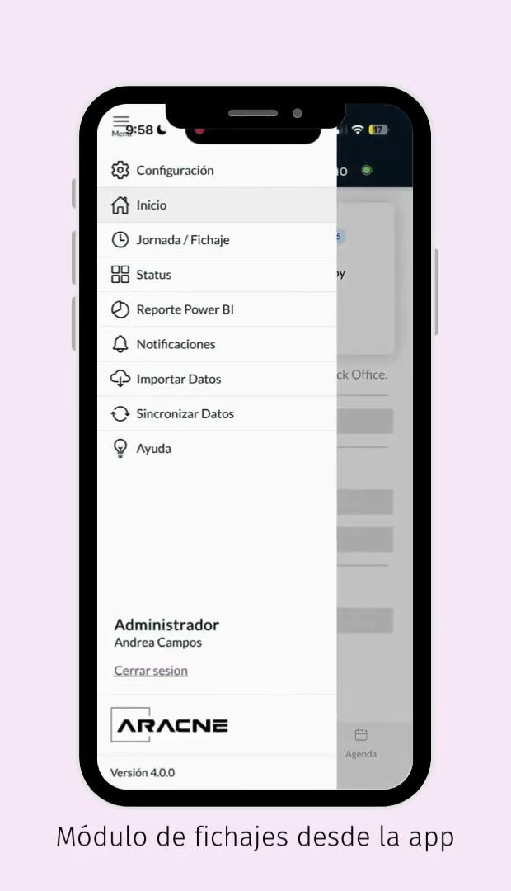
Paso 1. Jornada / Fichaje en el menú lateral. - En Mi Jornada, revisa la fecha y el horario previsto. Con el estado No iniciado, pulsa Iniciar jornada.
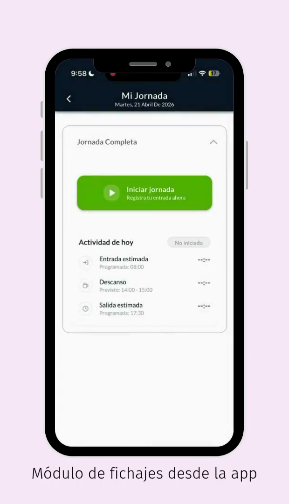
Paso 2. Inicio de la jornada. - Comprueba que el estado cambie a En curso y que aparezca la hora de Entrada registrada.
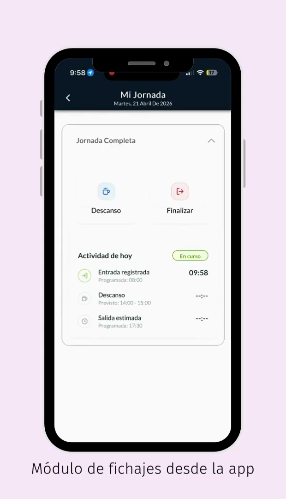
Paso 3. Entrada registrada y jornada en curso. - Cuando comience el descanso, pulsa Descanso. El control cambia a Fin de descanso y se registra la hora de inicio.
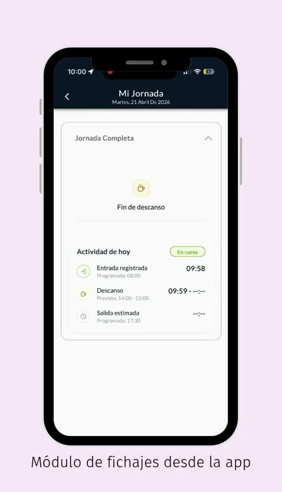
Paso 4. Descanso en curso. - Al regresar, pulsa Fin de descanso. Comprueba que la actividad muestre el intervalo completo del descanso.
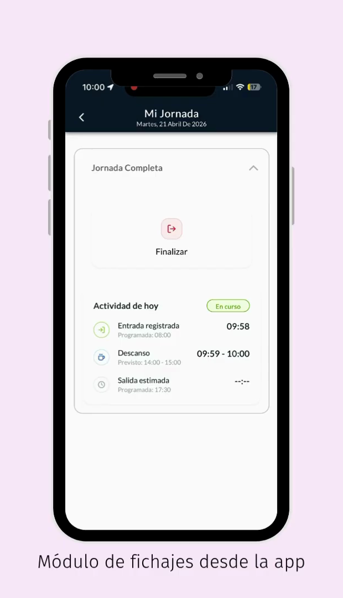
Paso 5. Descanso finalizado y registrado. - Al terminar el trabajo, pulsa Finalizar. Revisa el resumen de horas y pulsa Sí, finalizar jornada.
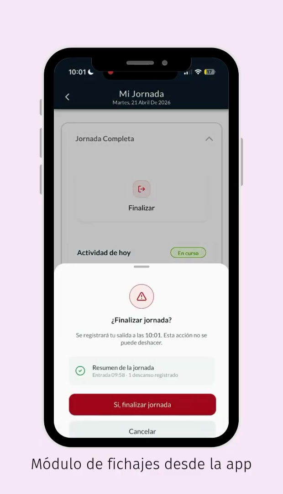
Paso 6. Confirmación de la salida. - Comprueba el aviso Jornada completada, el estado Completada y las horas registradas de entrada, descanso y salida.
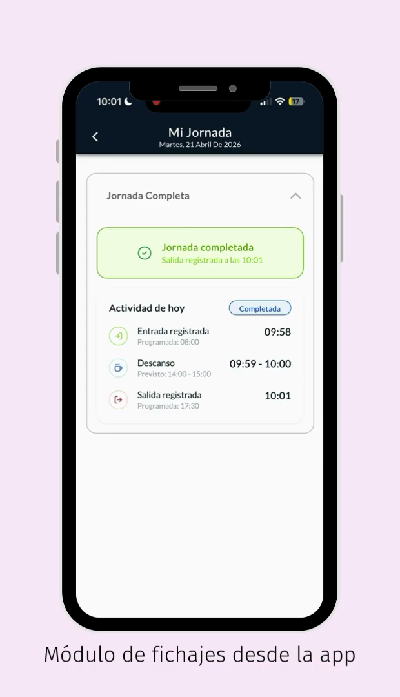
Paso 7. Jornada completada.
La actividad del día muestra la entrada, el intervalo de descanso y la salida, y la jornada figura como Completada.
Problemas habituales
- Si el módulo no aparece, el administrador debe revisar Panel de Control › Gestión de roles › App › Aplicación móvil - Jornada / Fichaje.
- Si el horario previsto no coincide, consulta al responsable antes de iniciar la jornada.
- Antes de confirmar la salida, revisa el resumen: la pantalla indica que la finalización no puede deshacerse.
Vídeo: Versión 4.0 - Módulo de fichajes desde la app.
5. Tareas y Formularios Avanzados
- En Tareas, abre primero los formularios marcados como obligatorios.
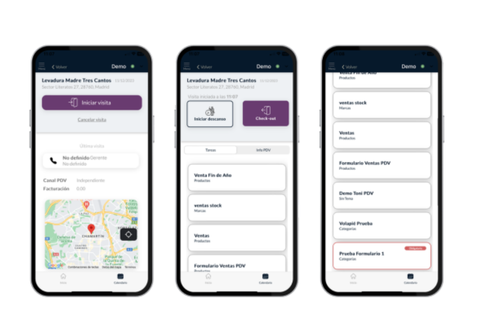
Paso 1. Acceso desde la visita al listado de tareas. 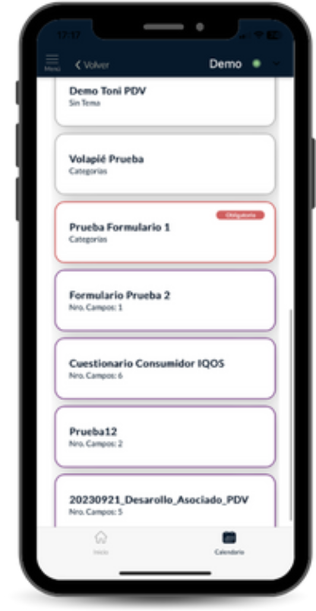
Paso 1. Tareas y estados obligatorios. - Cumplimenta los campos y pulsa Guardar. Comprueba que el formulario figure como completado.
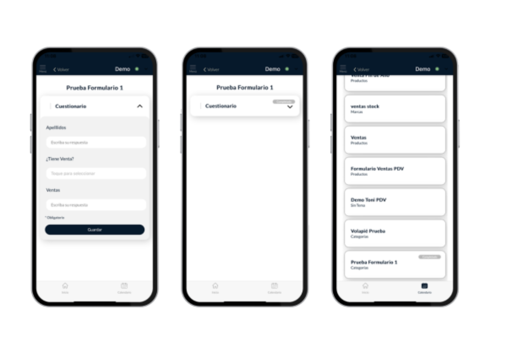
Paso 2. Cumplimentación, guardado y estado completado. - En formularios con muchos productos, abre Filtros, selecciona los criterios y pulsa Aplicar.
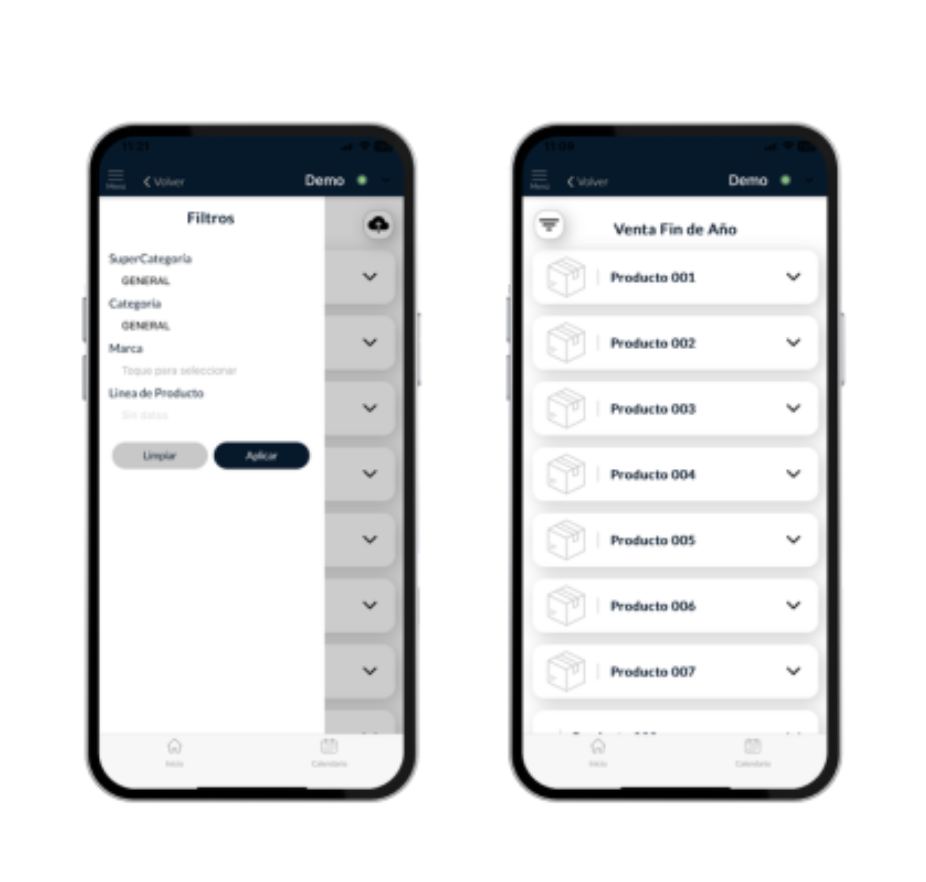
Paso 3. Filtros y lista de productos del formulario.
6. Check-out y confirmación
- Cuando las tareas requeridas estén completadas, abre Check-out.
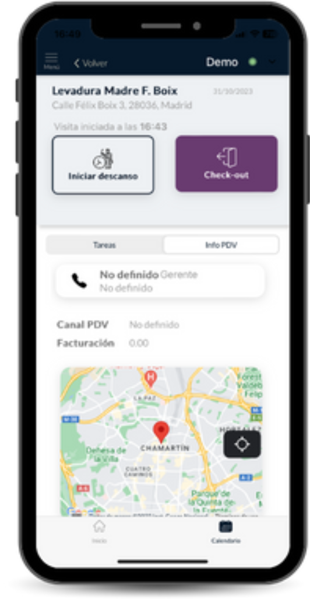
Paso 1. Acceso al check-out desde la visita. - Selecciona el resultado o tipo de visita y adjunta información adicional cuando corresponda.
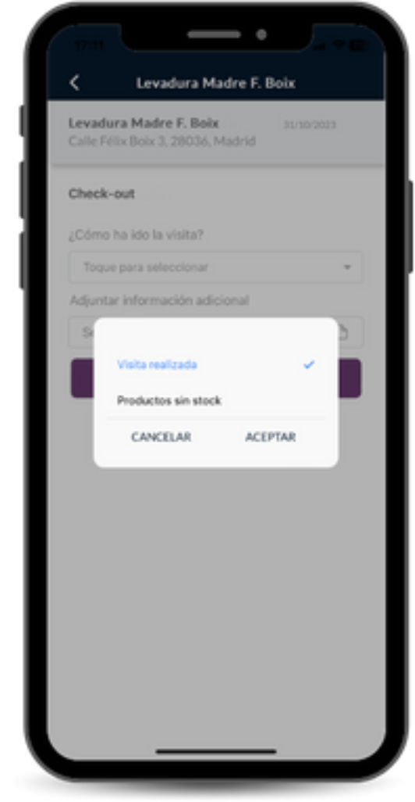
Paso 2. Selección del resultado de la visita. - Pulsa Finalizar visita y confirma. Comprueba que el PDV aparezca como Completado.
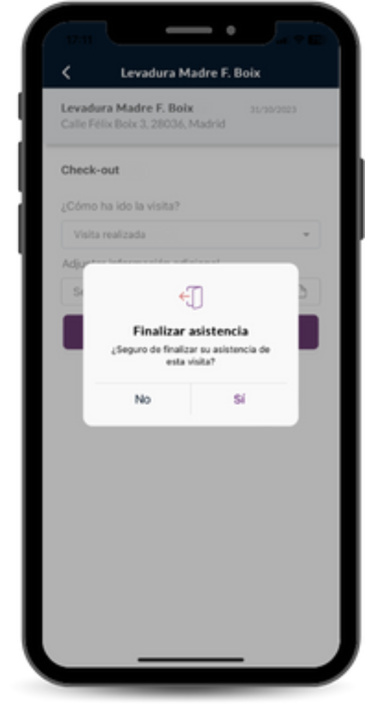
Paso 3. Confirmación de finalización. 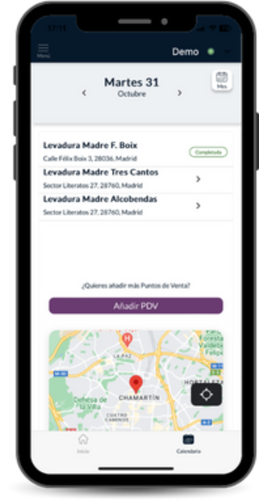
Paso 3. Ruta con estado Completado.
Resultado esperado
La visita queda finalizada y el listado muestra su estado como Completado.
Cómo comprobarlo
Vuelve al listado del día y verifica el estado del PDV. Si no permite cerrar la visita, revisa las tareas y los campos obligatorios.
Consulta check-in/check-out, rutas y cómo añadir PDV en la videoteca de Promotor.